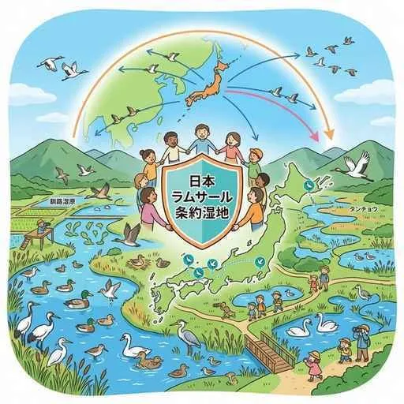
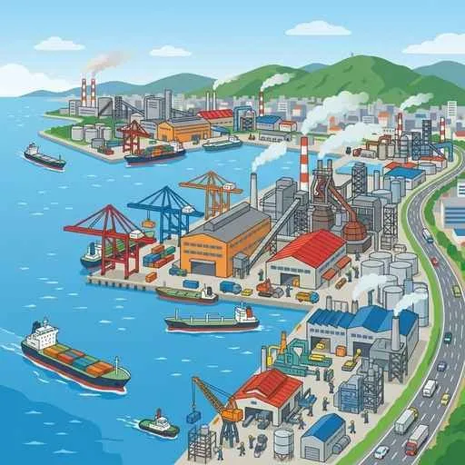

5. 近畿地方
近畿地方は、古くから日本の歴史の中心であり、多くの世界遺産や伝統文化が息づく京都・奈良と、商都として発展を続けてきた大阪を中心に成り立っています。近畿最大の水源である琵琶湖の役割、大阪湾岸の高度な工業と商業、そして千年の都が誇る数多くの伝統工芸品や歴史的景観の保存にいたるまで、重要ポイントを網羅して解説します！
1. 近畿地方の水源と自然環境
近畿の暮らしと産業は、豊かな水資源と広大な山地によって支えられています。

図1：水鳥の生息地を守るラムサール条約に登録されている、近畿の水がめ「琵琶湖」
- 琵琶湖（びわこ）：滋賀県にある日本最大の湖。近畿地方に住む約1450万人分の飲み水や工業用水を供給しており、「近畿地方の水がめ」と呼ばれます。水鳥などの豊かな生態系を守る国際条約であるラムサール条約に登録されています。
- 紀伊山地（きいさんち）：近畿南部を占める、険しい山岳地帯。雨が非常に多く森林資源が豊富なため、吉野杉や尾鷲ヒノキに代表される高品質な木材を育てる林業（りんぎょう）が盛んです。
- 志摩半島とリアス海岸：三重県東部には、鋸歯状に入り組んだ複雑な海岸線を持つリアス海岸が発達し、真珠や伊勢エビの養殖などに利用されています。
- 淡路島（あわじしま）：瀬戸内海で最も面積が大きく、たまねぎの栽培が非常に盛んな島です。
2. 商都「大阪」と阪神工業地帯
大阪は、江戸時代に米や特産品が集まる「天下の台所」と呼ばれ、商業の中心として発展しました。

図2：大阪や神戸を中心に、多種多様な工場が集まる「阪神工業地帯」
- 中小企業の技術力：大阪府東大阪市などには、技術水準の極めて高い「中小工場」が密集しており、特殊なネジや精密部品など、世界シェアを誇る製品を多数生産しています。
- 都市構造の変化：高度成長期の人口過密を解消するため、郊外に千里ニュータウンなどの「ニュータウン」が開発されました。さらに、神戸市のポートアイランドなどの人工島や、大阪湾泉州沖の人工島を埋め立てて日本初の24時間海上空港である「関西国際空港」が建設されました。
- 阪神工業地帯とパネルベイ：金属・化学・機械・食品など、多種多様な工業がバランスよく発展しています。近年、液晶パネルやプラズマテレビなどの薄型テレビ関連の工場が臨海部に集中したため、大阪湾岸は「パネルベイ」の異名でも呼ばれました。
- 近郊農業：大都市大阪などの大消費地向けに、鮮度が命の野菜を作る近郊農業が盛んで、和歌山県の温暖な斜面では「みかん」の栽培が有名です。
3. 千年の都「京都・奈良」と伝統文化
794年に都が置かれた京都（旧平安京）と、710年に都が置かれた奈良（旧平城京）は、日本文化の発祥地として世界中から観光客が訪れます。

図3：京都の古い街並みと、今も受け継がれる伝統的な職人の技術
- 伝統的工芸品（でんとうてきこうげいひん）：経済産業大臣によって指定され、昔からの技術や原材料で作られる地域の工芸品です。
- 西陣織（にしじんおり）：京都西陣で織られる、高級な絹織物の最高峰。
- 京友禅（きょうゆうぜん）：華やかな色彩で描かれる、京都の伝統的な染物。
- 伝統的な祭り：京都の八坂神社で夏に行われ、日本三大祭りの一つに数えられる「祇園祭（ぎおんまつり）」があります。
- 町並みの保存：歴史的な建造物や美しい古都の景観を守るために、建物の高さや看板の色を条例で厳しく規制する「古都保存法」などが適用されています。国宝や重要文化財に指定された歴史遺産が数多く存在します。
- 豊かな世界自然・文化遺産：奈良の東大寺や法隆寺などの文化財のほか、紀伊山地にある「紀伊山地の霊場と参詣道」（高野山・熊野三山・吉野大峯）が世界遺産に登録され、古くからの山岳信仰の聖地として守られています。
🔥 定期テスト対策・暗記のコツ
① 琵琶湖の役割と保全条約
「近畿地方の水がめ」と呼ばれる琵琶湖の名前と、水鳥の生息地を守る「ラムサール条約」の名前は非常によくテストでペアで出題されます！記述問題でも「なぜ琵琶湖が重要か？」➔「近畿地方約1450万人の貴重な飲料水や工業用水を供給しているから」と答えられるようにしましょう。
② 伝統的工芸品と保存制度
京都の「西陣織」「京友禅」の名前は漢字で正しく書けるようにしてください。また、景観を守るための「古都保存法」や建物の高さを規制する取り組みもよく問われます。
③ 阪神工業地帯と東大阪の中小企業
阪神工業地帯は「金属・化学などバランスよく発達している」のが特徴です。また、「東大阪市」は「高い技術力を持つ中小工場が密集している」という特色が記述でよく狙われます！